GSTC Destination Criteria
Version 2.0
6 December 2019
with
Performance indicators and SDGs
Formally endorsed by the GSTC International Standards Working Group and formally adopted by the GSTC
Board of Directors as the first revision of the GSTC Destination Criteria per the terms of the GSTC Bylaws
© The Global Sustainable Tourism Council, 2019, All Rights Reserved
The Global Sustainable Tourism Council
PO Box 96503 - #51887
Washington, DC 20090 USA
1
GSTC Destination Criteria v2.0
Preamble
The Global Sustainable Tourism Council (GSTC) Criteria were created to provide a common understanding of
sustainable tourism. The GSTC Destinations Criteria - known informally also as “GSTC-D” -- are the minimum
that any tourism destination should aspire to reach. They are organized around four main themes: sustainable
management; socio-economic impacts; cultural impacts; and environmental impacts. They have applicability
to the entire tourism sector.
The GSTC Criteria have been developed and revised while striving to adhere to the Standard-Setting Code of
the ISEAL Alliance, the body recognized to provide guidance on international norms for developing
sustainability standards in all sectors. The most recent revision of the GSTC-D took place in 2019 and was
based on two rounds of stakeholder consultation. Information on the development of the criteria and plans
for future revisions are available on www.gstcouncil.org.
What are the Criteria for?
Some of the uses of the GSTC Destination Criteria include the following:
• Serve as the basis for certification for sustainability
• Serve as basic guidelines for destinations that wish to become more sustainable
• Help consumers identify sound sustainable tourism destinations
• Serve as a common denominator for information media to recognize destinations and inform the public
regarding their sustainability
• Help certification and other voluntary destination level programs ensure that their standards meet a
broadly accepted baseline
• Offer governmental, non-governmental, and private sector programs a starting point for developing
sustainable tourism requirements
• Serve as basic guidelines for education and training bodies, such as tourism schools and universities
• Demonstrate leadership that inspires others to act.
The Criteria indicate what should be done, not how to do it or whether the goal has been achieved. This role
is fulfilled by performance indicators, associated educational materials, and access to tools for
implementation, all of which are an indispensable complement to the GSTC Criteria.
To whom do the Criteria apply?
The GSTC-D have been designed for destinations1. The criteria do not relate to a single body but rather to a
named place that can be uniquely identified. The criteria simply require that the condition described pertains
in that destination, irrespective of what body may be responsible for it or how or by whom any related action
is implemented.
1 A destination has been defined by the World Tourism Organization (UNWTO) as: “A physical space with or without administrative
and/or analytical boundaries in which a visitor can spend an overnight. It is the cluster (co-location) of products and services, and of
activities and experiences along the tourism value chain and a basic unit of analysis of tourism. A destination incorporates various
stakeholders and can network to form larger destinations”.
1
GSTC Destination Criteria v2.0
The scope of the GSTC-D is broad and the Criteria can be applied to a wide range of destinations. They may
be in any part of the world and of any type (e.g. urban, rural, mountain, coastal or mixed). The criteria can
relate to large destinations (e.g. sizeable cities or regions) and to small ones (e.g. national parks, clusters of
local communities, etc.).
While the GSTC-D relate to the place, not to a body, many of the criteria may nevertheless be taken up by and
applied through a destination management organisation which is responsible for a coordinated approach to
sustainable tourism within the destination. The existence of such an organisation is a central requirement of
the GSTC-D, as stipulated in Criterion A1. It should be noted that such an organisation is not necessarily a
local authority or public sector body and requires the involvement of both the public and private sector.
Some of the criteria refer to enterprises. These may be individual businesses but they may also be other forms
of facility, operation and undertaking. For example they could include museums, festivals, public buildings
and monuments, not only commercial businesses such as hotels or paid attractions.
Performance indicators and SDGs
The performance indicators presented here are designed to provide guidance in measuring compliance with
the criteria. They are not intended to be the definitive set or all-inclusive, but to provide a solid sample set for
users of the GSTC C-D in developing their own indicator sets. The performance indicators essentially provide
a suggested list of circumstances, factors, evidence and actions to be looked for in a destination in assessing
compliance with the criteria.
Application of the criteria will help a destination to contribute towards the 2030 Agenda for Sustainable
Development and the 17 Sustainable Development Goals. Against each of the criteria, one or more of the 17
SDGs is identified, to which it most closely relates.
Language and Translations
English is the official language of the GSTC Criteria and its related system.
Translations into other languages appearing on the GSTC website or elsewhere are to be used for training and
awareness purposes and are not authorized for usage in technical programs including certification and
accreditation except where specifically stipulated by formal agreement between the GSTC or its authorized
Accreditation Body and the standard owner and/or Certification Body. In the case of authorized usage of a
language other than English, any doubt regarding interpretation of the Criteria shall revert to the official
English language version.
Transition period
The transition periods for replacing GSTC Destination Criteria v1.0 with v2.0 are based on function, as follows:
• For purposes of policy-setting, training, and any other purposes not related to certification, v2.0 should
be used with immediate effect
• Owners of GSTC-Recognized destination/community standards shall have a period of two years to comply
with the new v2.0, up to 31st December 2021. Owners may wish to adapt their standard to the revisions
earlier, but should do so no later than June 30th, 2021, to allow time for any necessary adjustments per
GSTC’s review of the compliance of those changes.
• Certification Bodies that were accredited to certify destinations to GSTC Destination Criteria v1.0 must
have the revised v2.0 fully integrated into the certification system with evidence of past application of it
by December 31st, 2021. Their normal maintenance of accredited status shall not be delayed during the
transition period. New applicants for Accreditation after December 2019 must ensure that they are using
GSTC-D v2.0, or a GSTC-Recognized standard that is equivalent to v2.0, prior to submitting an application
for Accreditation.
2
GSTC Destination Criteria v2.0
Revisions to the GSTC Criteria
This version (v2.0) has been formally adopted by the Board of the Directors as the definitive version of the
GSTC Destination Criteria (GSTC-D), as from 6 December 2019.
This version of the GSTC Destination Criteria (v2.0) is the 1st revision since their December 2013 formal release.
GSTC shall conduct periodic reviews of no less than five years after the previous revision to determine whether
the current version remains relevant and whether and when a formal revision process should commence. The
next such review shall likely take place approximately December 2024. GSTC welcomes comment on the
Criteria at any time via the Criteria section of www.gstcouncil.org. Should comments provide evidence of
need to conduct a review earlier than December 2024, GSTC may conduct a review at an earlier date.
The structure of the criteria
The criteria are in four sections, each with two or three sub-sections, as shown below. The order of the
sections and sub-sections in no way indicates the relative importance of each topic.
SECTION A: Sustainable management
SECTION C: Cultural sustainability
A(a) Management structure and framework
C(a) Protecting cultural heritage
A(b) Stakeholder engagement
C(b) Visiting cultural sites
A(c) Managing pressure and change
SECTION B: Socio-economic sustainability
SECTION D: Environmental sustainability
B(a) Delivering local economic benefits
D(a) Conservation of natural heritage
B(b) Social wellbeing and impacts
D(b) Resource management
D(c) Management of waste and emissions
3
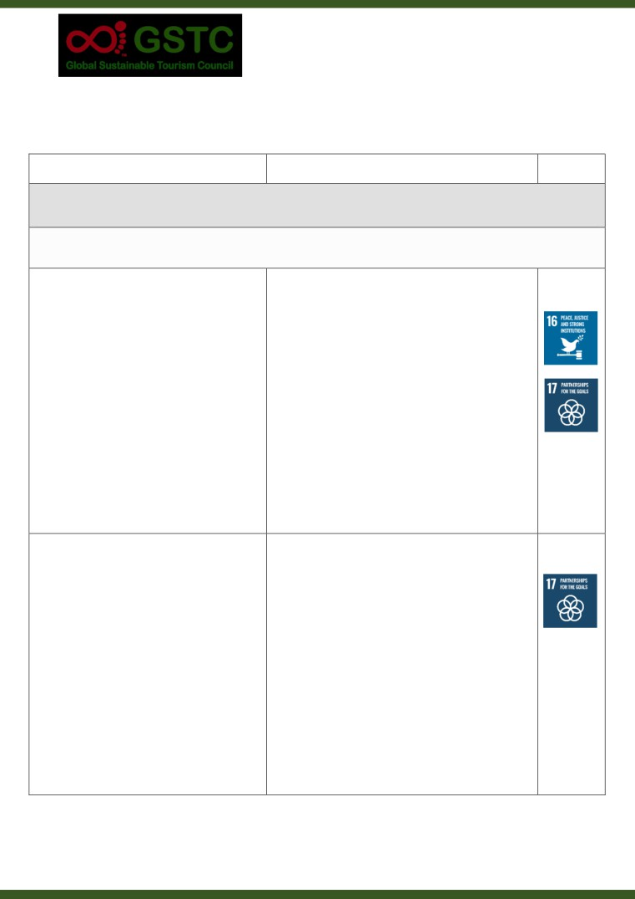
GSTC Destination Criteria v2.0
GSTC DESTINATION CRITERIA v2.0
Criteria
Indicators
SDGs
SECTION A: Sustainable management
A(a) Management structure and framework
A1 Destination management responsibility
The destination has an effective organization,
department, group, or committee responsible
a.
Documentary evidence showing relevant make-up
for a coordinated approach to sustainable
and responsibilities of the group.
tourism, with involvement by the private
b.
A financial plan and budget showing current and
sector, public sector and civil society. This
future funding sources.
group has defined responsibilities, oversight,
c.
Evidence of links and engagement with other
and implementation capability for the
bodies.
management of socio- economic, cultural and
d.
Records of permanent staff and contracted
environmental issues. The group is adequately
personnel, indicating relevant experience.
funded, works with a range of bodies in
e.
Management guidelines and processes, which
delivering destination management, has access
demonstrate awareness and adherence to
to sufficient staffing (including personnel with
sustainability principles and transparency in
experience in sustainability) and follows
operations and letting of contracts.
principles of sustainability and transparency in
its operations and transactions.
A2 Destination management strategy and
action plan
The destination has established and is
a.
A published document setting out the current
implementing a multi-year destination
destination strategy and action.
management strategy and action plan that is
b.
The strategy/plan clearly visible and available on-
publicly available, is suited to its scale, was
line.
developed with stakeholder engagement and is
c.
Evidence of stakeholder consultation, meetings
based on sustainability principles. The strategy
etc. in developing the plan.
includes an identification and assessment of
d.
Reference to sustainability principles and an
tourism assets and considers socio-economic,
assessment of assets, issues and risks, contained
cultural and environmental issues and risks.
in the strategy and action plan.
The strategy relates to and influences wider
e.
Specific references in the strategy/action plan to
sustainable development policy and action in
wider sustainable development policy (including
the destination.
pursuit of the SDGs), and vice versa.
4
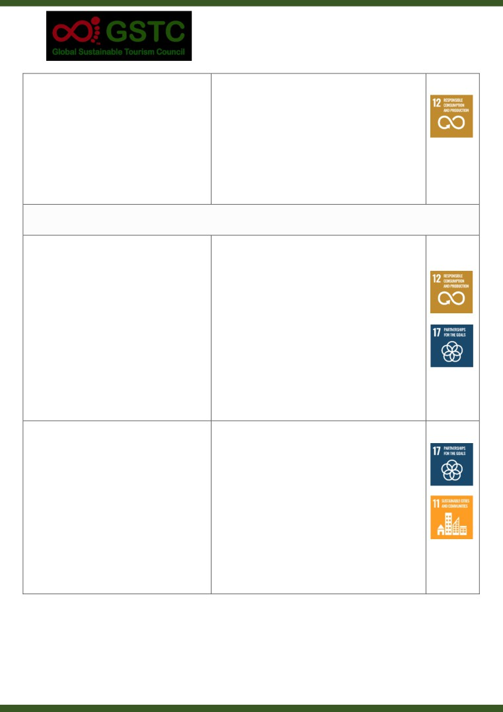
GSTC Destination Criteria v2.0
A3 Monitoring and reporting
The destination is implementing a system to
a. Specific quantifiable socio-economic, cultural and
monitor and respond to socio-economic,
environmental indicators and targets identified.
cultural and environmental issues and impacts
b. Measurement against these indicators, with
arising from tourism. Actions and outcomes
results recorded and publicised at least annually.
are regularly monitored, evaluated and
c. Written evidence of monitoring and reporting of
publicly reported. The monitoring system is
actions and outcomes.
periodically reviewed.
d. Previous reviews of monitoring system and
schedule for future reviews.
A(b) Stakeholder engagement
A4 Enterprise engagement and sustainability
standards
The destination regularly informs tourism-
a.
Evidence of regular communication of
related enterprises about sustainability issues
sustainability issues to tourism-related businesses
and encourages and supports them in making
(Media, meetings, direct contact etc.).
their operations more sustainable. The
b.
Sustainability support and advice to tourism-
destination promotes the adoption of
related business - available and promoted.
sustainability standards, promoting the
c.
Number and percentage of businesses certified
application of GSTC-I Recognized standards
against tourism sustainability standards (and
and GSTC-I Accredited certification schemes
whether GSTC recognised/accredited), with
for tourism enterprises, where available. The
targets for wider outreach.
destination publicizes a list of sustainability
d.
Evidence of promotion of certification schemes.
certified enterprises.
e.
List of tourism-related certified enterprises, kept
up to date.
A5 Resident engagement and feedback
The destination enables and promotes public
a.
Evidence of the promotion and facilitation of
participation in sustainable destination
public participation in destination
planning and management. Local
planning/management.
communities’ aspirations, concerns and
b.
Information on the type and level of such
satisfaction with tourism sustainability and
participation.
destination management are regularly
c.
Surveys of residents and other systematic
monitored and publicly reported, and action is
feedback mechanisms, covering tourism issues.
taken in response to them. The destination
d.
Evidence of action taken in response to residents’
has a system to enhance local understanding
feedback.
of sustainable tourism opportunities and
e.
Programme of information, education and
challenges and to build the capacity of
training on tourism provided for residents.
communities to respond.
5
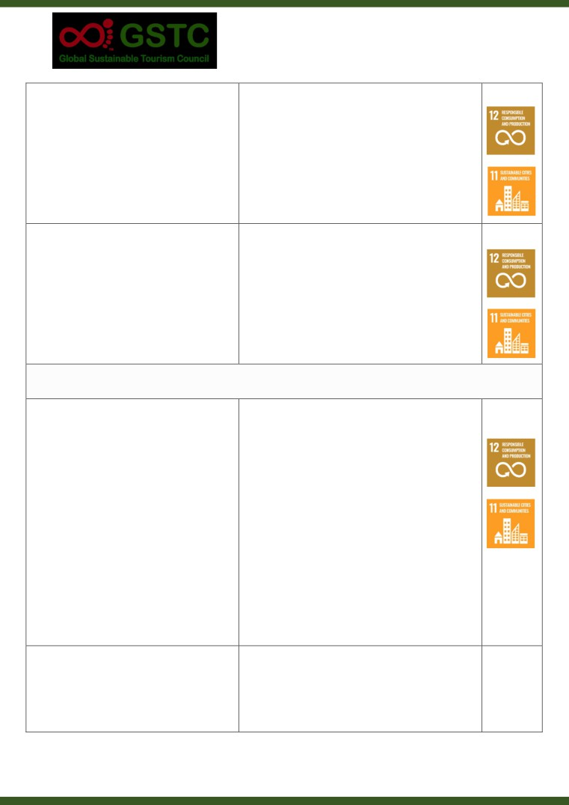
GSTC Destination Criteria v2.0
A6 Visitor engagement and feedback
The destination has a system to monitor and
a.
Visitor surveys (and other feedback mechanisms)
publicly report visitor satisfaction with the
- carried out and reported.
quality and sustainability of the destination
b.
Surveys and feedback includes visitor reaction to
experience and, if necessary, to take action in
sustainability issues.
response. Visitors are informed about
c.
Evidence of actions taken in response to visitor
sustainability issues in the destination and the
survey/feedback findings.
part that they can play in addressing them.
d.
Examples of visitor information that covers
sustainability issues and how to respond to them.
A7 Promotion and information
Promotion and visitor information material
a.
Current information and promotional material
about the destination is accurate with regard
with appropriate content.
to its products, services, and sustainability
b.
A process exists for checking the accuracy and
claims. Marketing messages and other
appropriateness of destination promotion and
communications reflect the destination’s
information.
values and approach to sustainability and treat
c.
Evidence of consultation with local communities
local communities and natural and cultural
and environmental and cultural bodies on
assets with respect.
communications content and delivery.
A(c) Managing pressure and change
A8 Managing visitor volumes and activities
The destination has a system for visitor
management which is regularly reviewed.
a.
The destination management strategy and action
Action is taken to monitor and manage the
plan addresses seasonality and spread of
volume and activities of visitors, and to reduce
visitation.
or increase them as necessary at certain times
b.
Variation in visitor volumes throughout the year is
and in certain locations, working to balance the
monitored, including in the most visited locations.
needs of the local economy, community,
c.
Impacts of visitor volumes and activities are
cultural heritage and environment.
identified through observation and community
and stakeholder feedback.
d.
Actions taken to manage visitor flows and
impacts.
e.
Marketing strategy and selection of target
markets takes account of visit patterns, the
impact of activities and destination needs.
A9 Planning regulations and development
control
The destination has planning guidelines,
a. Specific policies/regulations/ guidelines which
regulations and/or policies which control the
control development - documented and
location and nature of development, require
identified by title and date.
6
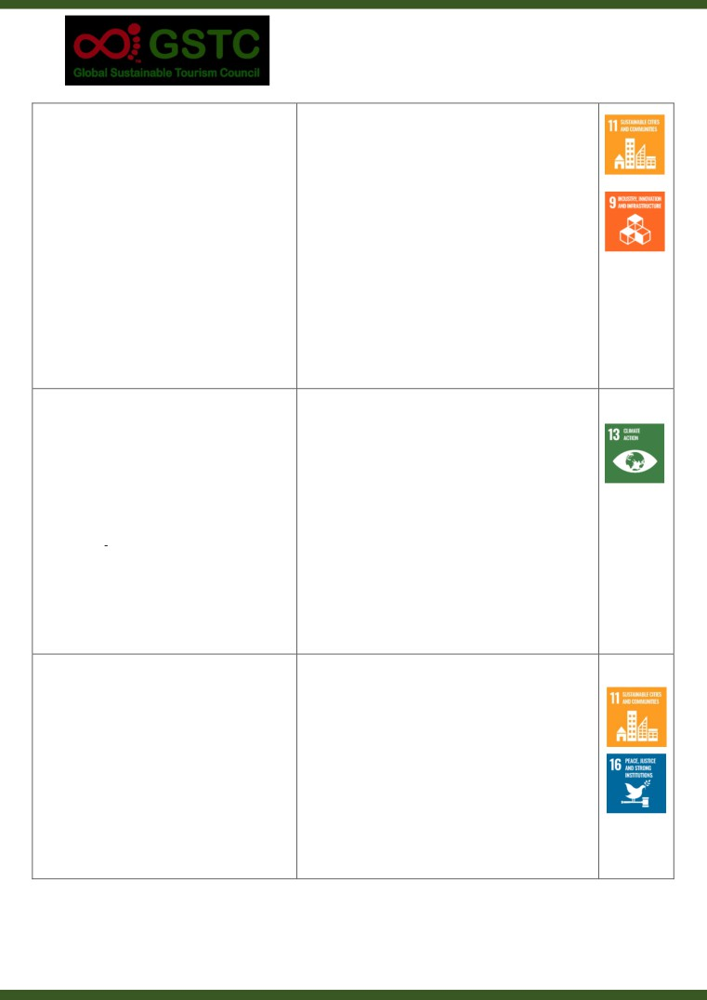
GSTC Destination Criteria v2.0
environmental, economic, and socio-cultural
b.
Impact assessment requirements are set out,
impact assessment and integrate sustainable
covering environmental, economic, and socio-
land use, design, construction, and demolition.
cultural impacts, at sufficient scale to address long
Regulations also apply to operations, including
term issues for the destination.
property rental and concessions for tourism
c.
Specific regulations on property rental and
purposes. The guidelines, regulations and
operation for tourism, with evidence of their
policies were created with public participation
application and enforcement.
and are widely communicated and enforced.
d.
Evidence of public participation in the
development of policies/regulations/guidelines.
e.
Evidence of consultation with, and consent from
indigenous people or minority ethnic groups
when tourism development has been proposed or
has occurred in their territories.
f.
Evidence of communication and enforcement of
the policies/regulations/guidance, at planning,
development and implementation stages.
A10 Climate change adaptation
The destination identifies risks and
a.
The destination management strategy and action
opportunities associated with climate change.
plan identifies and addresses climate issues.
Climate change adaptation strategies are
b.
Regulations, guidelines and zoning for tourism
pursued for the siting, design, development
development and activities accommodate the
and management of tourism facilities.
consequences of climate change.
Information on predicted climate change,
c.
A climate risk assessment, covering current and
associated risks and future conditions is
future risks - undertaken and made publicly
provided for residents, businesses and visitors.
available.
d.
Evidence of consideration of impact on, and
contribution of, local ecosystems to climate
change adaptation.
e.
Information on climate change that has been
made publicly available.
A11 Risk and crisis management
The destination has a risk reduction, crisis
a.
A documented risk reduction, crisis management
management and emergency response plan
and emergency response plan for tourism in the
that is appropriate to the destination. Key
destination.
elements are communicated to residents,
b.
The plan recognises a wide range of risks,
visitors, and enterprises. Procedures and
including natural disasters, terrorism, health,
resources are established for implementing the
resource depletion, and others appropriate to the
plan and it is regularly updated.
location.
c.
Communication procedures identified for use
during and after an emergency.
d.
Programme for local delivery of information and
training on risk and crisis management.
7
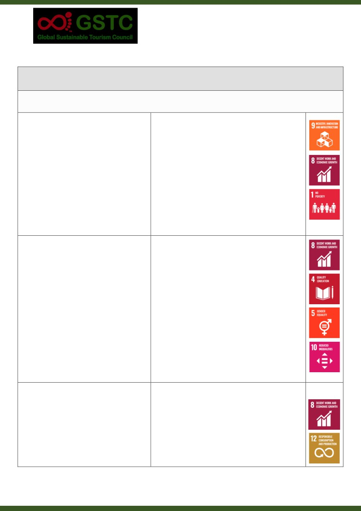
GSTC Destination Criteria v2.0
SECTION B: Socio-economic sustainability
B(a) Delivering local economic benefits
B1 Measuring the economic contribution of
tourism
The direct and indirect economic contribution
a. Programme of economic data gathering.
of tourism to the destination’s economy is
b. Annual reports on the direct and indirect
monitored and publicly reported. Appropriate
economic contribution of tourism in the
measures may include levels of visitor volume,
destination.
visitor expenditure, employment and
c. Data covering a range of measures of economic
investment and evidence on the distribution
impact (e.g. volume, expenditure, employment,
of economic benefits.
investment and spread of economic benefit in the
destination).
B2 Decent work and career opportunities
The destination encourages and supports
a. Provision of relevant skills training
career opportunities and training in tourism.
programmes/courses, available locally.
The destination’s tourism enterprises commit
b. Statements of commitment by tourism
to providing equality of opportunity for local
enterprises to the provision of decent work/
employment, training and advancement, a
career opportunities.
safe and secure working environment, and a
c. Training and employment opportunities promoted
living wage for all.
to and taken up by local people, including women,
young people, minorities and people with
disabilities.
d. Channels for checking working conditions and
receiving/handling grievances (e.g. involvement of
labour unions).
B3 Supporting local entrepreneurs and fair
trade
The destination encourages the retention of
a. Advice, finance or other support - available in the
tourism spending in the local economy
destination for tourism-related SMEs.
through supporting local enterprises, supply
b. Assistance with market access for local tourism-
chains and sustainable investment. It
related SMEs.
promotes the development and purchase of
c. Action to encourage and assist local tourism
local sustainable products based on fair trade
enterprises to purchase goods and services locally.
principles and that reflect the area’s nature
8
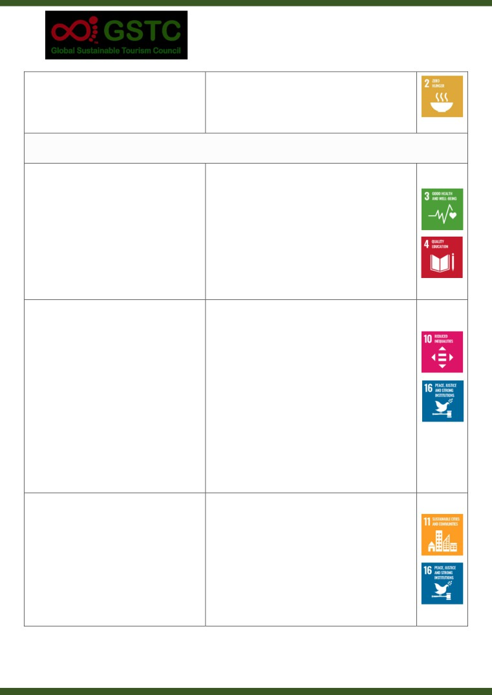
GSTC Destination Criteria v2.0
and culture. These may include food and
d. Initiatives to help local farmers, artisans and food
beverages, crafts, performance arts,
producers to engage in the tourism value chain.
agricultural products, etc.
e. Local produce and crafts identified, promoted and
available for sale to visitors in the destination.
B(b) Social wellbeing and impacts
B4 Support for community
The destination has a system to enable and
a.
Support for local community and sustainability
encourage enterprises, visitors, and the public
initiatives by local tourism enterprises is
to contribute to community and sustainability
encouraged and facilitated.
initiatives in a responsible manner.
b.
Schemes exist, and are promoted, for visitors to
support local community and sustainability
initiatives.
c.
Volunteering and engagement with the
community does not involve intrusion or
exploitation.
B5 Preventing exploitation and
discrimination
The destination upholds international
a.
Reference (title, date) to specific laws that pertain
standards on human rights. It has laws,
in the destination regarding human rights,
practices and an established code of conduct
exploitation, discrimination and harassment.
to prevent and report on human trafficking,
b.
Evidence of communication and enforcement of
modern slavery and commercial, sexual, or
above laws and related good practice (including to
any other form of exploitation, discrimination
tourism enterprises and visitors).
and harassment of or against anyone,
c.
Risk and impact analysis regarding human rights,
particularly children, adolescents, women,
including human trafficking, modern slavery and
LGBT and other minorities. The laws and
child labour - conducted regularly.
established practices are publicly
d.
Destination and key tourism players are
communicated and enforced.
signatories to the Code of Conduct for the
Protection of Children from Sexual Exploitation in
Travel and Tourism.
B6 Property and user rights
Laws and regulations regarding property
a.
Reference (title, date) to specific laws that pertain
rights and acquisitions are documented and
in the destination regarding property rights and
enforced. They comply with communal and
acquisitions and user and access rights to
indigenous rights, ensure public consultation
resources.
and do not authorize resettlement without
b.
Reference in the above laws to communal and
free prior and informed consent and fair and
indigenous rights, public consultation and
just compensation. Laws and regulations also
resettlement.
protect user and access rights to key
c.
Evidence of enforcement of the above laws in the
resources.
context of tourism development and activity.
9
GSTC Destination Criteria v2.0
d. Evidence of community consultation, consent and
compensation.
B7 Safety and security
The destination has a system to monitor,
a.
Security and health services are well established
prevent, publicly report, and respond to
and active in the destination.
crime, safety, and health hazards that
b.
The needs of visitors are identified and addressed
addresses the needs of both visitors and
in the delivery of security and health services.
residents.
c.
Tourism facilities are inspected for compliance
with safety and hygiene standards.
B8 Access for all
Where practical, sites, facilities and services,
a.
The existence of any regulations and standards
including those of natural and cultural
regarding the accessibility of visitor sites, facilities
importance, are accessible to all, including
and services.
persons with disabilities and others who have
b.
Consistent application of accessibility standards in
specific access requirements or other special
public facilities.
needs. Where sites and facilities are not
c.
Data on the extent/proportion of visitor sites and
immediately accessible, access is afforded
facilities that are accessible.
through the design and implementation of
d.
Evidence of programmes to improve access for
solutions that take into account both the
people with a range of access needs.
integrity of the site and such reasonable
e.
Information on accessibility included in
accommodations for persons with access
communications about the destination as a whole.
requirements as can be achieved. Information
f.
Details of accessibility included in visitor
is made available on the accessibility of sites,
information about key sites.
facilities and services.
10
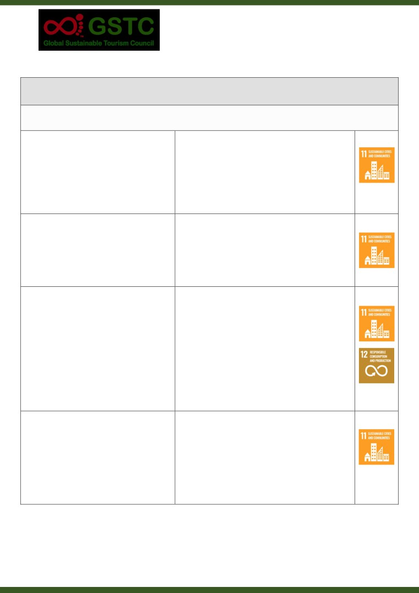
GSTC Destination Criteria v2.0
SECTION C: Cultural sustainability
C(a) Protecting cultural heritage
C1 Protection of cultural assets
The destination has a policy and system to
a.
Lists of cultural assets, including evaluation and
evaluate, rehabilitate, and conserve cultural
indication of vulnerability.
assets, including built heritage and cultural
b.
Programme of rehabilitation and conservation of
landscapes.
assets.
c.
Mechanisms for using income from tourism to
support conservation of cultural assets.
C2 Cultural artefacts
The destination has laws governing the proper
a.
Reference to relevant laws relating to historical
sale, trade, display, or gifting of historical and
artefacts pertaining in the destination (title, date).
archaeological artefacts. The laws are
b.
Evidence of communication of relevant laws to
enforced and publicly communicated,
tourism enterprises and visitors.
including to tourism enterprises and visitors.
c.
Evidence of enforcement of relevant laws.
C3 Intangible heritage
The destination supports the celebration and
a.
Identification and listing of intangible cultural
protection of intangible cultural heritage,
heritage.
including local traditions, arts, music,
b.
Examples of celebration and visitor experiences of
language, gastronomy and other aspects of
intangible cultural heritage (events, distinctive
local identity and distinctiveness. The
products etc.).
presentation, replication and interpretation of
c.
Evidence of involvement of local and indigenous
living culture and traditions is sensitive and
communities in developing and delivering visitor
respectful, seeks to involve and benefit local
experiences based on intangible cultural heritage.
communities, and provides visitors with an
d.
Feedback from visitors and local communities on
authentic and genuine experience.
delivery of intangible heritage experiences.
C4 Traditional access
The destination monitors, protects, and when
a.
Monitoring of accessibility to natural and cultural
necessary rehabilitates or restores local
sites for the local community.
community access to natural and cultural
b.
Evidence of engagement with the local community
sites.
regarding traditional access.
c.
Specific action to protect and/or rehabilitate local
community access.
11
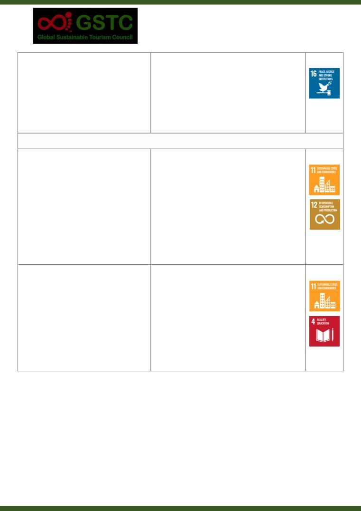
GSTC Destination Criteria v2.0
C5 Intellectual property
The destination has a system to contribute to
a.
Reference to laws on intellectual property
the protection and preservation of intellectual
pertaining in the destination (title, date).
property rights of communities and
b.
Communication of intellectual property rights to
individuals.
tourism stakeholders.
c.
Evidence that intellectual property rights are
protected in the development of cultural
experiences for visitors.
C(b) Visiting cultural sites
C6 Visitor management at cultural sites
The destination has a system for the
a.
Monitoring of visitor flows and impact on cultural
management of visitors within and around
sites, with results shared across the destination.
cultural sites, which takes account of their
b.
Evidence of action to manage tourism-related
characteristics, capacity and sensitivity and
impacts in or around cultural sites.
seeks to optimize visitor flow and minimize
c.
Existence and distribution of published guidelines
adverse impacts. Guidelines for visitor
on visitor behaviour at sensitive sites and cultural
behaviour at sensitive sites and cultural
events and periodic monitoring of compliance.
events are made available to visitors, tour
d.
A code of practice for tour operators and tour
operators and guides before and at the time
guides and/or other engagement with them on
of the visit.
visitor management at cultural sites.
e.
Provision of training for guides.
C7 Site interpretation
Accurate interpretative material is provided
a.
Provision of informative interpretative material on
which informs visitors of the significance of
site and in formats that are accessible pre-arrival.
the cultural and natural aspects of the sites
b.
Evidence that interpretative material has been
they visit. The information is culturally
well researched and is accurate.
appropriate, developed with host community
c.
Interpretation material that identifies the
collaboration, and clearly communicated in
significance and sensitivity/fragility of sites.
languages pertinent to visitors and residents.
d.
Evidence of host community collaboration in
preparation of relevant interpretative material.
e.
Interpretative material available in relevant
languages.
12
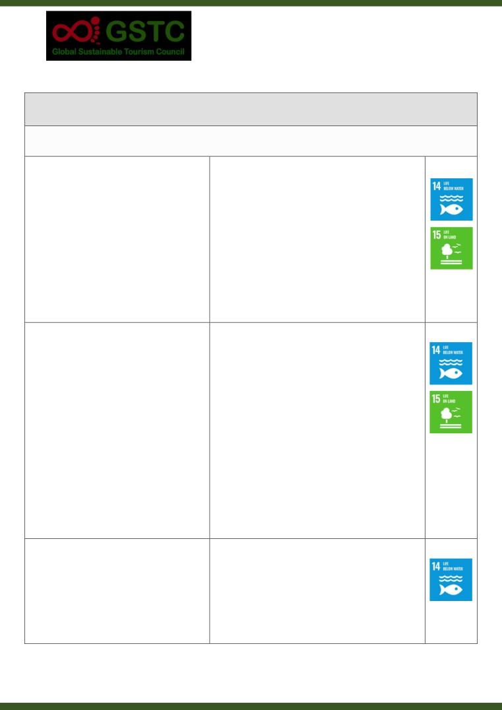
GSTC Destination Criteria v2.0
SECTION D: Environmental sustainability
D(a) Conservation of natural heritage
D1 Protection of sensitive environments
The destination has a system to monitor,
a.
List of natural heritage sites and assets, indicating
measure and respond to the impacts of
type, conservation status and vulnerability.
tourism on the natural environment, conserve
b.
Programmes to conserve biodiversity and natural
ecosystems, habitats and species, and prevent
heritage.
the introduction and spread of invasive
c.
Programmes to eradicate and control invasive
species.
species.
d.
Action to identify, monitor and mitigate tourism
impacts on biodiversity and natural heritage.
e.
Mechanisms for using income from tourism to
support conservation of natural assets.
f.
Communications with visitors and enterprises on
reducing spread of alien species.
D2 Visitor management at natural sites
The destination has a system for the
a.
Monitoring of visitor flows and impact on natural
management of visitors within and around
sites, with results shared across the destination.
natural sites, which takes account of their
b.
Evidence of action to manage and mitigate
characteristics, capacity and sensitivity and
tourism-related impacts in or around natural sites.
seeks to optimize visitor flow and minimize
c.
Existence and distribution of published guidelines
adverse impacts. Guidelines for visitor
on visitor behaviour at sensitive sites, and periodic
behaviour at sensitive sites are made available
monitoring of compliance.
to visitors, tour operators and guides before
d.
A code of practice for tour operators and tour
and at the time of the visit.
guides and/or other engagement with them on
visitor management at natural sites.
e.
Cooperation with local conservation bodies to
identify environmental risks associated with
tourism and measures to reduce them.
f.
Provision of training for guides.
D3 Wildlife interaction
The destination has a system to ensure
a. Reference (title, date) to international, national
compliance with local, national, and
and local laws that apply in the destination
international laws and standards for wildlife
regarding interaction with wildlife.
interactions. Interactions with free roaming
b. Endorsement of international standards for
wildlife, taking into account cumulative
wildlife viewing for both marine and terrestrial
impacts, are non-invasive and responsibly
species.
managed to avoid adverse impacts on the
13
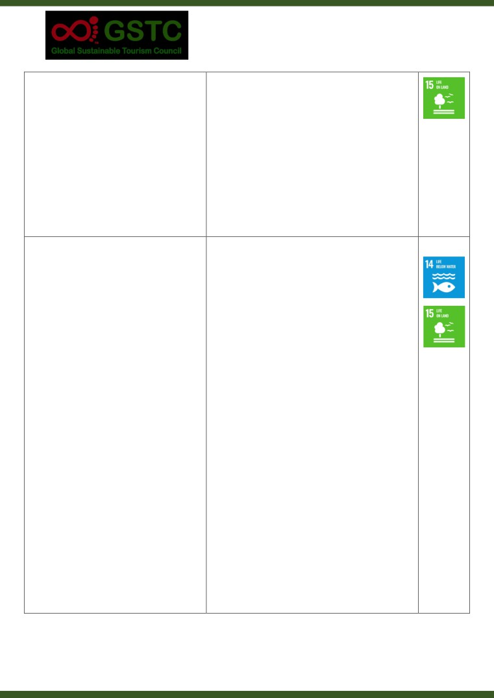
GSTC Destination Criteria v2.0
animals concerned and on the viability and
c. Distribution of a code of practice for wildlife
behaviour of populations in the wild.
interaction, including viewing, which reflects
international standards.
d. System for checking compliance with regulations,
and code of practice amongst tourism operations.
e. Actions to monitor wildlife wellbeing and
minimize disturbance, in locations where
interactions occur.
f.
Provision of information to visitors on harmful
wildlife interaction, such as touching and feeding.
D4 Species exploitation and animal welfare
The destination has a system to ensure
a.
Reference (title, date) to specific international,
compliance with local, national, and
national and local laws, standards and guidelines
international laws and standards that seek to
that apply in the destination regarding animal
ensure animal welfare and conservation of
welfare and conservation of species.
species (animals, plants and all living
b.
Notification of laws, standards and guidelines to
organisms). This includes the harvesting or
tourism enterprises and guides.
capture, trade, display, and sale of wildlife
c.
A system for inspection of the conditions of
species and their products. No species of wild
captive wildlife and domestic animals, including
animal is acquired, bred or held captive,
their housing and handling.
except by authorized and suitably equipped
d.
Licensing and checking of qualifications of
persons and for properly regulated activities.
personnel responsible for captive wildlife.
Housing, care and handling of all wild and
e.
Action to promote the Convention on
domestic animals meets the highest standards
International Trade in Endangered Species (CITES)
of animal welfare.
in the tourism sector and to ensure compliance
with it.
f.
Provision of information to visitors on avoiding
trade in endangered species, e.g. in purchase of
souvenirs derived from threatened species of
wildlife notified by IUCN or CITES.
g.
Enforcement of legislation to ensure that any
hunting activity is part of a scientifically based,
properly managed and strictly enforced approach
to conservation.
14
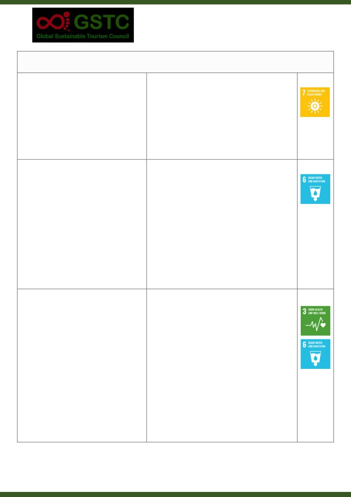
GSTC Destination Criteria v2.0
D(b) Resource management
D5 Energy conservation
The destination has targets to reduce energy
a.
Energy consumption targets are publicised and
consumption, improve efficiency in its use, as
promoted.
well as increase the use of renewable energy.
b.
Programme to increase energy efficiency - e.g.
The destination has a system to encourage
promoting and supporting insulation.
enterprises to measure, monitor, reduce, and
c.
Investment in renewable energy and percent of
publicly report their contribution to these
total provision/consumption.
targets.
d.
Support and incentives for energy monitoring and
reduction by enterprises.
D6 Water stewardship
The destination encourages enterprises to
a.
Provision of guidance and support for monitoring
measure, monitor, publicly report and manage
and reduction of water usage by enterprises.
water usage. Water risk in the destination is
b.
Program to regularly assess water risk.
assessed and documented. In cases of high
c.
Setting, publication and enforcement of water
water risk, water stewardship goals are
stewardship goals, where water risk has been
identified and actively pursued with
assessed as high.
enterprises, to ensure that tourism use does
d.
Monitoring and control of sources and volume of
not conflict with the needs of local
water used for tourism purposes and its effect on
communities and ecosystems.
local communities and ecosystems. Promotion
and checking of adherence to goals by tourism
enterprises.
e.
Visitor information on water risk and minimising
water use.
D7 Water quality
The destination monitors water quality for
a.
Programme of water quality monitoring.
drinking, recreational and ecological purposes
b.
Existence of data and reports on water quality.
using quality standards. The monitoring
c.
Monitoring bathing water, with certification and
results are publicly available, and the
identification of sites reaching set standards.
destination has a system to respond in a
d.
Evidence of actions to improve water quality.
timely manner to water quality issues.
e.
Information for visitors on quality of local drinking
water, to encourage use as alternative to bottled
water.
15
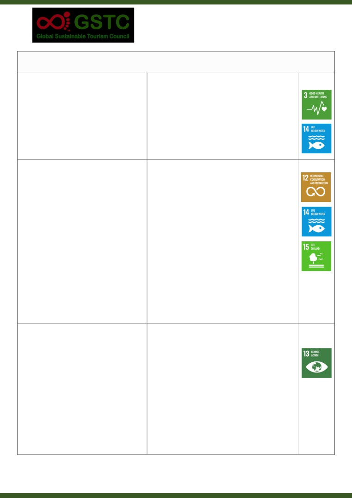
GSTC Destination Criteria v2.0
D(c) Management of waste and emissions
D8 Wastewater
The destination has clear and enforced
a.
Written guidelines and regulations on wastewater
guidelines in place for the siting, maintenance
treatment.
and testing of discharge from septic tanks and
b.
System of enforcing guidelines amongst
wastewater treatment systems. The
enterprises.
destination ensures that wastes are properly
c.
Monitoring/testing of released wastewater.
treated and reused or released safely without
d.
Provisional of sustainable municipal water
adverse impacts on the local population and
treatment systems, for use by the tourism sector,
the environment.
where practical and appropriate.
D9 Solid waste
The destination measures and reports on its
a.
Waste monitoring programme, with results and
generation of waste and sets targets for its
targets published.
reduction. It ensures solid waste is properly
b.
Coordinated campaign/advice/support with
treated and diverted from landfill, with
tourism enterprises on waste management,
provision of a multiple-stream collection and
including food waste.
recycling system which effectively separates
c.
Campaign to reduce/eliminate single use items,
waste by type. The destination encourages
especially plastics.
enterprises to avoid, reduce, reuse, and
d.
Waste management programme for public offices
recycle solid waste, including food waste.
and facilities.
Action is taken to eliminate or reduce single-
e.
Provision of a collection and recycling system,
use items, especially plastics. Any residual
with at least four streams (i.e. organic, paper,
solid waste that is not reused or recycled is
metal, glass and plastic).
disposed of safely and sustainably.
f.
Provision of sustainable system for disposal of
residual waste.
g.
Campaign to eliminate dropping of litter, including
by visitors, and to keep public spaces clean.
h.
Adequate bins for separated waste disposal.
D10 GHG emissions and climate change
mitigation
The destination has targets to reduce
a.
Published target for percentage of emissions
greenhouse gas emissions, and implements
reduction by specified date.
and reports on mitigation policies and actions.
b.
Annual climate report, including monitoring and
Enterprises are encouraged to measure,
mitigation actions.
monitor, reduce or minimise, publicly report
c.
Supported campaign or other engagement with
and mitigate greenhouse gas emissions from
tourism enterprises on reduction and mitigation
all aspects of their operation (including from
of emissions.
suppliers and service providers). Offsetting of
d.
Action to reduce emissions from public sector
any remaining emissions is encouraged.
operations.
e.
Information for enterprises and visitors on
offsetting schemes that meet recognised
standards.
16
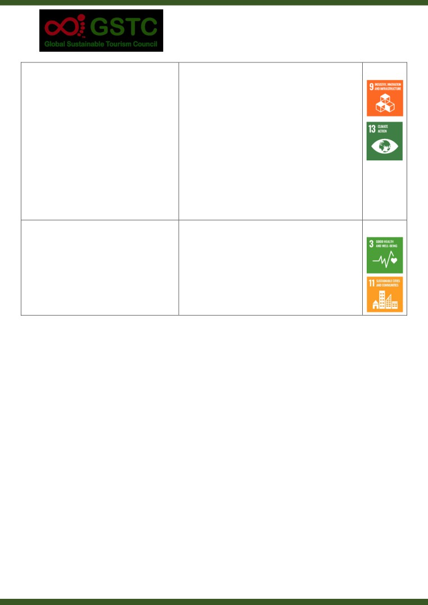
GSTC Destination Criteria v2.0
D11 Low-impact transportation
The destination has targets to reduce
a.
Investment in more sustainable transport
transport emissions from travel to and within
infrastructure, including public transport and low
the destination. An increase in the use of
emissions vehicles.
sustainable, low-emissions vehicles and public
b.
Information promoted to visitors on alternative
transport and active travel (e.g., walking and
transport options to and within the destination
cycling) is sought in order to reduce the
c.
Data on visitor use of alternative transport modes.
contribution of tourism to air pollution,
d.
Improvement and promotion of cycling and
congestion and climate change.
walking opportunities.
e.
Prioritization of visitor markets accessible by short
and more sustainable transport options.
f.
Public sector and tourism enterprises prioritise
low-impact transportation in their own
operations.
D12 Light and noise pollution
The destination has guidelines and regulations
a.
Guidelines on light and noise pollution - produced
to minimize light and noise pollution. The
and promoted to tourism enterprises.
destination encourages enterprises to follow
b.
Identification and monitoring of potential sources
these guidelines and regulations.
of noise and light pollution related to tourism.
c.
Mechanisms to enable residents to report noise
and light pollution, with follow-up action.
17